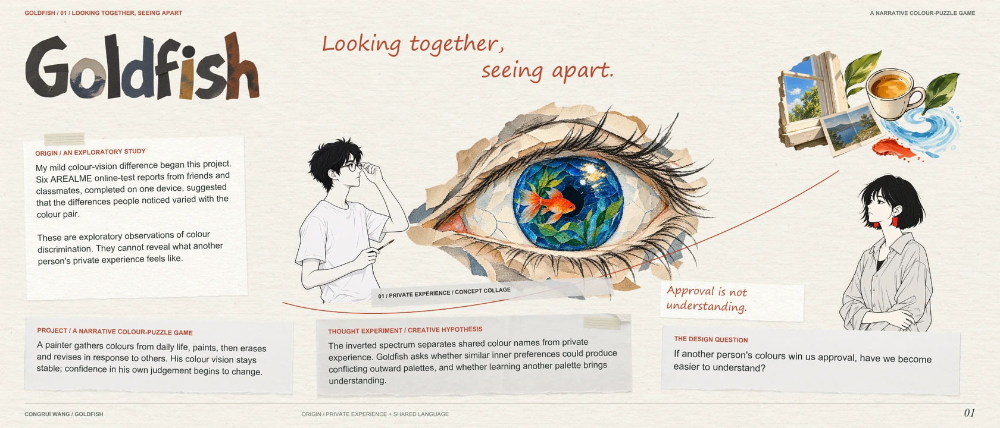
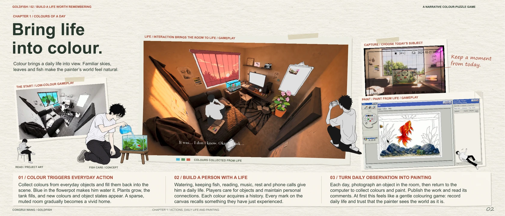
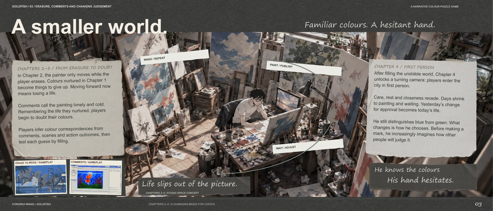
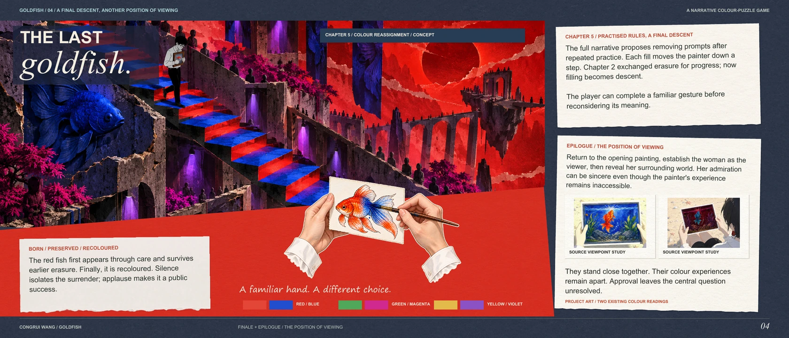
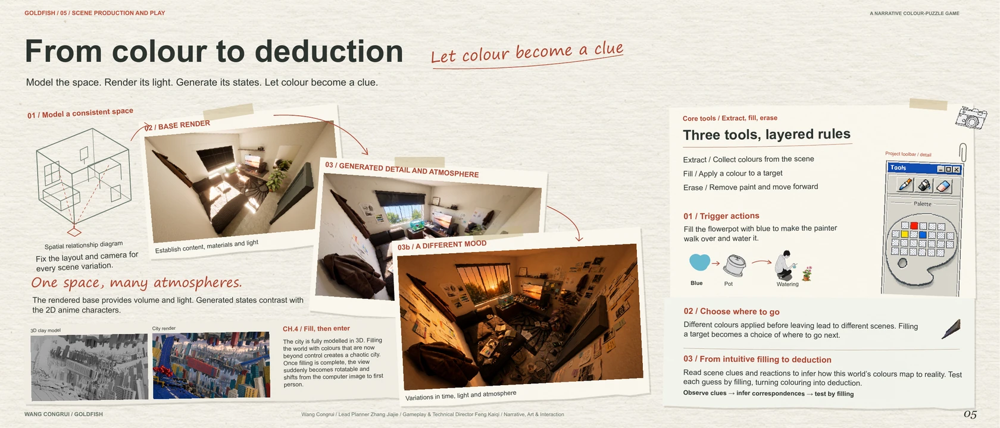

05 / GAME DESIGN · NARRATIVE PUZZLE
Looking together,
seeing apart.
Approval is not
understanding.
A painter gathers colours from daily life, paints, then erases and revises in response to others. His colour vision stays stable; confidence in his own judgement begins to change.
- Medium
- Unity / 2D narrative puzzle
- Core actions
- Absorb · Fill · Erase
- My role
- Lead planning
01 / Origin
Looking together, seeing apart.
A private experience becomes a design question.

↗ Explore the pageRead page 01
Goldfish
Looking together,
seeing apart.
ORIGIN / AN EXPLORATORY STUDY
My mild colour-vision difference began this project.
Six AREALME online-test reports from friends and
classmates, completed on one device, suggested
that the differences people noticed varied with the
colour pair.
These are exploratory observations of colour
discrimination. They cannot reveal what another
person's private experience feels like.
01 / PRIVATE EXPERIENCE / CONCEPT COLLAGE
PROJECT / A NARRATIVE COLOUR-PUZZLE GAME
A painter gathers colours from daily life, paints, then erases
and revises in response to others. His colour vision stays
stable; confidence in his own judgement begins to change.
THOUGHT EXPERIMENT / CREATIVE HYPOTHESIS
The inverted spectrum separates shared colour names from private
experience. Goldfish asks whether similar inner preferences could produce
conflicting outward palettes, and whether learning another palette brings
understanding.
THE DESIGN QUESTION
If another person's colours win us approval, have we become
easier to understand?
Approval is not
understanding.
02 / Attachment
First, give it a life.
Care gives colour a history. Erasure gives progress a cost.

↗ Explore the pageRead page 02
First, give it a life.
The prologue begins with a woman's admiration. We then return to the painter's
room, giving the image a personal history before asking the player to change it.
01 / CARE
02 / MAKE
03 / REMOVE
01 / CARE GIVES COLOUR A HISTORY / CONCEPT + PROJECT ART
SEED
02 / COLOURS ENTER THE PAINTING / PROJECT ART
03 / ERASURE BECOMES PROGRESS / CONCEPT + PROJECT ART
CHAPTER 1 / COLOUR HAS A LIVED SOURCE
Sky blue enters the palette; water restores the tank. Watering the plant
brings leaves and flowers; green aquatic growth reveals the red fish.
Coffee, photographs and a call to a loved one give other colours a
place in the painter's day.
The puzzle establishes attachment before it asks for sacrifice.
FROM SOURCE TO EXPRESSION
Extract, fill and observe connect life to the painting. The player does
more than choose attractive swatches: each colour recalls an action
and something cared for.
Later criticism can therefore conflict with the player's memory. A plant
read as withered was once helped to grow.
CHAPTER 2 / PROGRESS LEAVES A LOSS
Sustained erasing advances the figure while removing the image.
Passers-by offer another reading; the agent imposes consequential
standards; loved ones express sincere care. These voices are not one
shared malice. At the exhibition steps, the red fish remains, carrying
earlier care into the finale.
03 / Pressure
A smaller world.
Same colours. Less certainty.

↗ Explore the pageRead page 03
A smaller world.
Same colours. Less certainty.
Chapter 3 / A new basis for choice
Earlier, colour came from the sky, plants, fish and
daily events. In the later narrative, comments
become new sources. Approval offers a usable
direction.
A familiar palette is rejected; a praised alternative
turns the painted sky green. Next morning, filling
the sky green becomes a condition for beginning.
Yesterday's compromise enters today's routine.
A repeated action slowly changes what counts as
a sensible choice.
Chapter 4 / Feedback becomes space
Daily care, relationships and observation
recede. The camera closes on the work while
comments fill the surroundings.
Making an image, waiting for a response and
adjusting again increasingly replace the life that
once fed expression.
The painter still distinguishes blue from green.
The wrong-colour image expresses hesitation
and a loss of trust in feeling, rather than a
change in colour vision.
OUTSIDE THE LOOP / DAILY LIFE
REST
GROWTH
SOURCE ART / LIFE RECEDES TO THE MARGINS
Colour vision stays.
Trust shifts.
WAKE / REPEAT
PAINT / POST
WAIT / ADJUST
Life leaves the frame.
CHAPTERS 3-4 / STUDIO CONCEPT
04 / Viewpoint
The last goldfish.
A familiar hand. A different choice.

↗ Explore the pageRead page 04
THE LAST
goldfish.
CHAPTER 5 / COLOUR REASSIGNMENT / CONCEPT
CHAPTER 5 / PRACTISED RULES, A FINAL DESCENT
The full narrative proposes removing prompts after
repeated practice. Each fill moves the painter down a
step. Chapter 2 exchanged erasure for progress; now
filling becomes descent.
The player can complete a familiar gesture before
reconsidering its meaning.
BORN / PRESERVED / RECOLOURED
The red fish first appears through care and survives
earlier erasure. Finally, it is recoloured. Silence
isolates the surrender; applause makes it a public
success.
A familiar hand. A different choice.
RED / BLUE
GREEN / MAGENTA
YELLOW / VIOLET
EPILOGUE / THE POSITION OF VIEWING
Return to the opening painting, establish the woman as the
viewer, then reveal her surrounding world. Her admiration
can be sincere even though the painter's experience
remains inaccessible.
SOURCE VIEWPOINT STUDY
SOURCE VIEWPOINT STUDY
They stand close together. Their colour experiences
remain apart. Approval leaves the central question
unresolved.
PROJECT ART / TWO EXISTING COLOUR READINGS
05 / System
A gesture with a system.
The tools remain familiar. The source of authority changes.

↗ Explore the pageRead page 05
A gesture with a system.
The tools remain familiar. The source of authority changes.
A / EXISTING RECORDING / PROTOTYPE EVIDENCE
01 / A SOURCE + THE PALETTE
02 / THE PAINTED IMAGE
03 / A CHARACTER ON THE PATH
The recording shows the room, palette interaction, painting and an outdoor movement sequence. These frames
document the visible prototype; they do not verify every chapter of the complete narrative.
B / ORIGINAL STATE ASSETS / A CONFIGURED RESPONSE
A236 / EMPTY TANK
A249 / WATER / BEFORE
A250 / LIFE / AFTER
A218 / SEED
A340 / GROWTH
A078 / CAMERA / OUTLINE
A079 / CAMERA / FILLED
A228 / DISPLAY
A229 / MEMORY
A246 / DOOR
SELECT
CONFIRM
RESPOND
CONTINUE
01 / DESIGN DECISIONS
Let the player own it first: care gives later loss a history.
Keep the verbs, shift their basis: lived observation gradually gives way
to outside approval.
Separate completion from praise: a configured progression condition
and an evaluative response need not mean the same thing.
02 / DOCUMENTED FOUNDATION + NARRATIVE SCOPE
Source / receiver events, colour matching, wrong-colour image
responses, timed visibility sequences and erasing-linked movement
provide a foundation for the narrative.
The complete repetition loop, prompt-free finale and viewpoint
transition still need their own corresponding footage or storyboards.
Asset availability alone is not proof of implementation.
03 / NEXT QUESTIONS + TEAM
Can players separate a change in trust from a change in colour vision?
When does repetition become pressure? Does executing a choice feel
like endorsing it?
Congrui Wang / Lead planning
Jiajie Zhang / Gameplay planning + technical direction
Kaiqi Feng / Narrative, art + interaction coordination